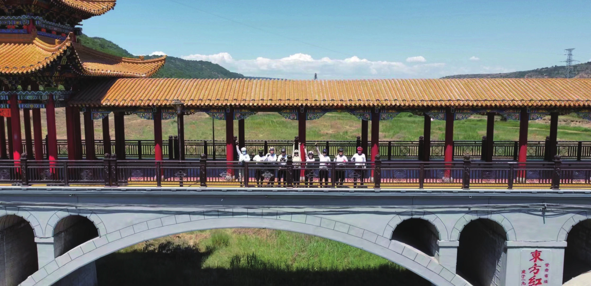
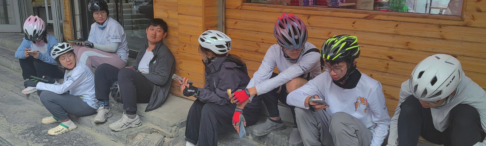

只是我又该向何处诉说，向何处去呢？
原刊82
我果然还是很讨厌这个世界。
我的暑期的最后一天，我一个人坐在绿皮火车的硬座上，看着没买上坐票的人们在地板上很勉强地挤着挨着躺在一起，想着接下来 20 个小时的旅程的时候，精疲力尽的脑子里只剩下这一句话。
自从我成年，需要独自面对、处理事件，打理人际关系之后，陆陆续续有各种各样的人评价我是个相当自私、以自我为中心的人。我对这整个世界的评价和感受都取决于我个人当时所处的环境和心情，我很少考虑别人的感受，但又极度在意别人对我的评价。于是我就在这样扭曲的心理中把自己的大学生活过得一团乱麻。
我的心里总是翻涌着不知来处也不知归途的愤怒和不满，任何与我预想中不相符的事情都能莫名其妙地激怒我，我随时随地想找人大吵一架，但永远伴随着愤怒而来的委屈又会把我想说的一切堵回喉咙里。


所以当我意识到在整个暑期，我几乎从未因为任何事生任何人的气的时候，甚至在我回程途中，因为我自己贪便宜和错误估计火车环境而不得不呆在充满汗臭和满地躺人的火车厢整整一天，我也只是冷静地认识到“我不喜欢这样”，而不是任凭情绪折磨自己的时候，我是相当惊奇的。就好像我的叛逆、愤怒和所谓的“青春疼痛”都被远远地抛在了西北的山里，或者说，那些不知何处来的情绪和反复内省带来的内耗都随着我爬坡时流出的汗水，随着我放坡时甩在背后的风，随着我在高原上深深吸入肺部、又缓缓吐出的每一口气息，彻底地留在了那个与我短暂相逢的一个月的世界里。
从墙角探出脑袋的
托那情绪稳定的一个月的福，我久违地拥有了一段正常的人际交往，或者说，十段。说实在的，当我描述一段人际交往的用词是“正常”，就足可见我在这方面的经验之困乏语言之贫瘠。而若是描述那十位青年男女给我带来了什么改变或者他们在我心中的地位，也总让我回想起我高中时期写情书的羞赧，莫名起一身鸡皮疙瘩。
我是个忘性很大的人，两天前发生的事情就足够让我的记忆将一切晕染成水墨，那么四个月前的骑行生活留下来的也就只剩下一个大致的轮廓和一些零星闪过的片段。而那些片段里，只有我们在那西北流浪的十一个人和遥远的，永远望不到尽头的路。
其实暑期和我想象的其实很不一样。我以为会是我跟着那些比我勇敢得多的男孩女孩们去面对我们途径的每一座城市。我会遇见各种各样的人，会遇见各种各样的事，会不得不从我自怨自艾的封闭中走出来去向外输出一些什么——以至于我参加春训和正式入选暑期队员的时候是满怀着一腔悲愤和孤勇的，我把这看作一场试炼，一场我用以折磨自己以获得一定程度上的平静的旅途（哦对了这也是我明知成团日期还是在当天去参加本不必参加的组会以至于最后狂蹬自行车以参加成团宴的原因）。
然而不是。那一个月更像是十一个人抱团形成一叶小小扁舟，在漫无边际的大海中游荡。我们很少需要去面向外界做什么，我们只是围成一个圈，面对面地坐着，轻声细语地交流着我们明天将驶向何方。有人病了，有人累了，有人哭了，有人笑了，那一切的一切最后都被那轻声细语的交流声所掩盖。那是一个相当封闭的，又相当稳定的环境。当你身处其中的时候，一切都那么自然而然地发生了，你自然而然地接受了别人对你的帮助，也自然而然地开始帮助别人，你们自然而然地熟识了，于是一切问题都自然而然地解决了，好像曾经有过争端，好像曾经有过不合，但那都不太重要，我们最后总是会围成一圈面对面坐着，轻声细语地商量着接下来的方向和挑战。
后来我才意识到一件事，你参与一件事，和你真正自己筹备一件事，所付出的心力和精力都完全不是一个水平的。我不知道我上面描述的团内氛围是否正如我们亲爱的团长所期望，也不知道他是否有意去维持了这样一种环境，亦或者是干脆我的感受就和其他团众大相径庭。只是一切都已经发生，暑期已经结束，我们的未来已经被打好了基底。曾经的事实变成故事，故事变成历史，历史化作回忆落在我的笔尖和心头，然后再化作年刊上的墨迹，随着沉底的暑期日志一起化作无人再提起的曾经。


我是一个悲观的虚无主义者，尽管奋力地在这世上挣扎着活着，但又茫茫然不知归处飘摇无依。我写过厚重的日记，写过荒诞的梦境，写过我梦想中的一切，只是大多都被我一把火烧得干干净净，而那种仿佛将自己剖开切开然后丢弃一部分的痛苦和疼痛又能让我真切地意识到我自己还仍然活在这世上。于是当我意识到我必须为了那曾经的一个月留下些什么，把一些曾经的我分离出来仔仔细细地检视清楚，然后留在一个我不能随时销毁掉，不能阻止任何人查看的地方时，那种熟悉的，折磨过我很长时间的痛苦又如影随形地缠上了我。我意识到我从未彻底摆脱掉那些我以为我已经完全丢弃在西北草原的东西。我只是短暂遗忘了他们。
当然，我的苦恼和焦虑都不应该是这篇文字的主题，我应该回忆那梦一般美好的日子，竭尽所能地描述那一切，描述它给我带来的改变，描述它教会我的正确的哭泣和欢笑的方式，描述它逐渐化作的那一种坚实的基底和带给我的向前去的勇气，但我又总是控制不住，控制不住我又在这样的文字中自伤自苦，撒泼打滚。痛苦总是给人更加深刻的回忆。
我又想起我曾经写情书的日子，不知道当年收下我情书的人现在是如何处理我那些阴郁的文字和情感的。而这样的反复闪回又唤醒了更多我曾经的记忆，耳机里放着的说不清是轻柔还是哀伤的音乐，黑夜中点亮的一点小小灯火，一切都是相似的，只是书写工具从铅笔和课桌桌面，变成水笔和活页纸，再变成我现如今面前调成黑夜模式的电脑。于是我又想，那这篇满篇不知所云的东西又是否能称得上我写给车协的情书呢？然后我又想，应该是不能算的。毕竟我写情书的目的是为了证明某人对我的重要性，而我写这篇东西的目的仅仅是向车协证明我曾经存在于此。
然后我又开始想，我到底为什么非得写这篇东西不可呢？我曾经的日记化作飞灰随着风远去，我曾经的朋友们化作记忆中断裂的触角随着我的不断逃离慢慢地被吞噬，我曾经的自己也化作泪化作灰化作飘荡的雾气随着日出悄悄地消失不见，我又何必非得写这篇东西呢？
好吧，那么我只能承认了，这篇文字其实并不是为了车协写的，是为了那曾经陪我真切地走过那一个月的团众们写的。那场我错过的长团会，那些我错过的自白和倾听，那个我蜷缩在我宿舍的椅子上伴随着你们的声音渐渐入睡的晚上。我总想再告诉你们些什么，告诉你们那些我为了看起来不那么阴郁而没有写在自述里的东西，告诉你们些我不好直接说出来的东西。
我不知道我想传达的东西究竟有几分真切地表达出来了，也不知道真正能看见我这满篇荒唐言的人究竟都有谁，只是如今我也没那么在乎这些，我能从我心中掏出来的只有这么点东西，不管如何荒唐，不管如何不知所云，不管如何贫瘠和拙劣，这些就是全部了。